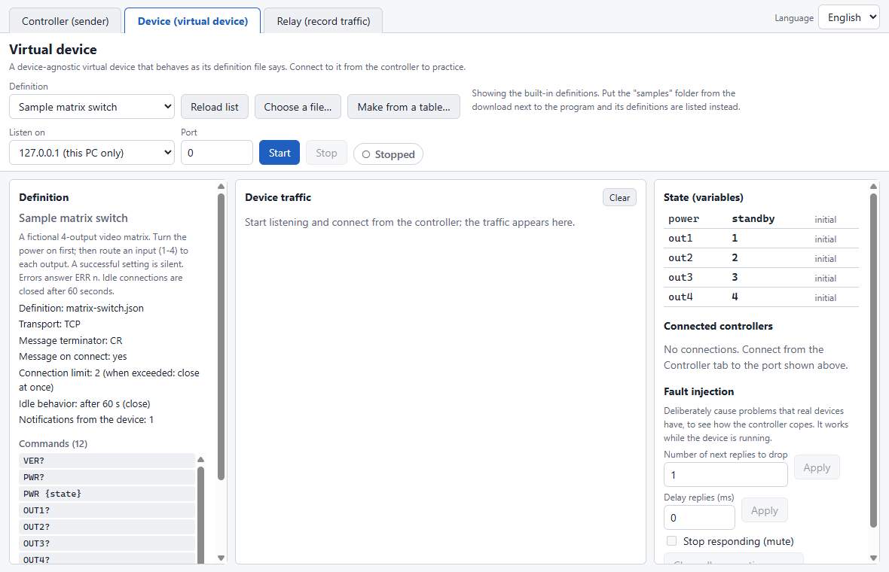
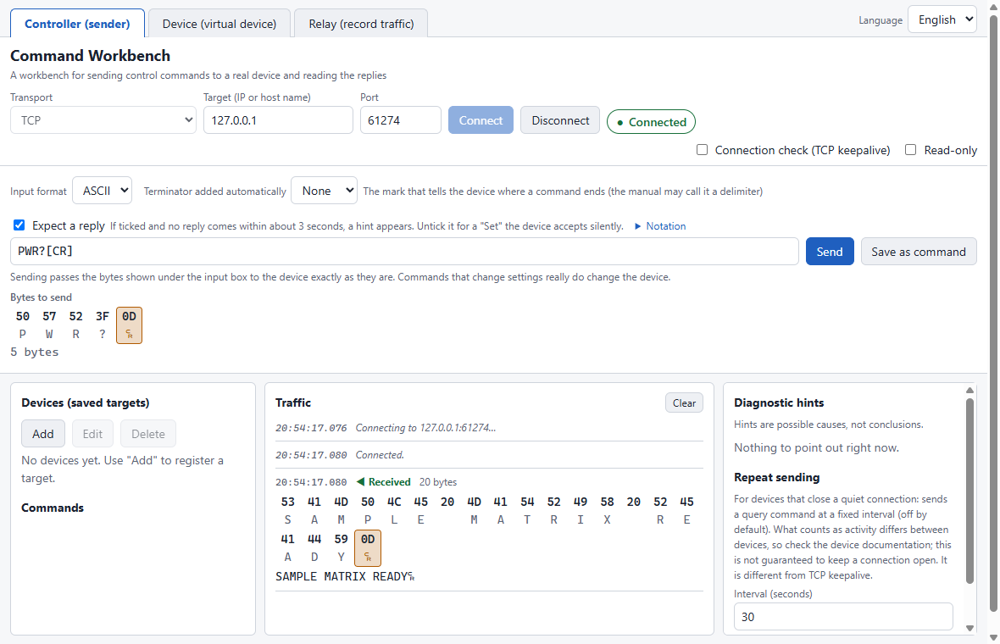
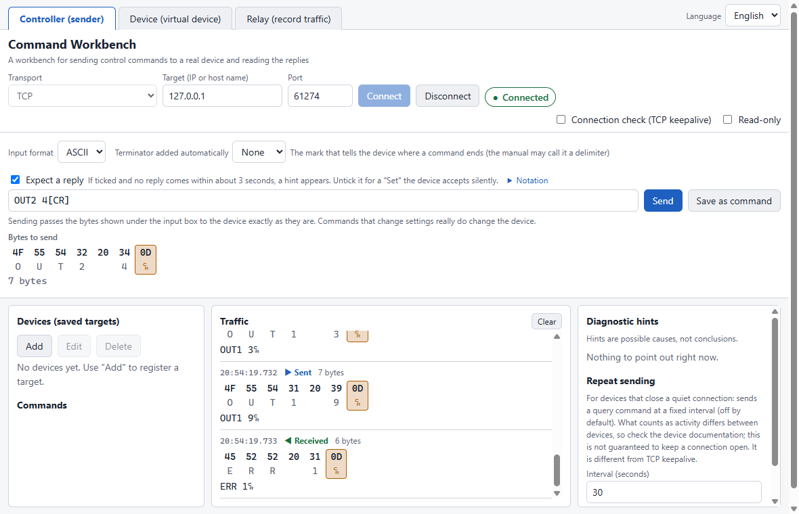
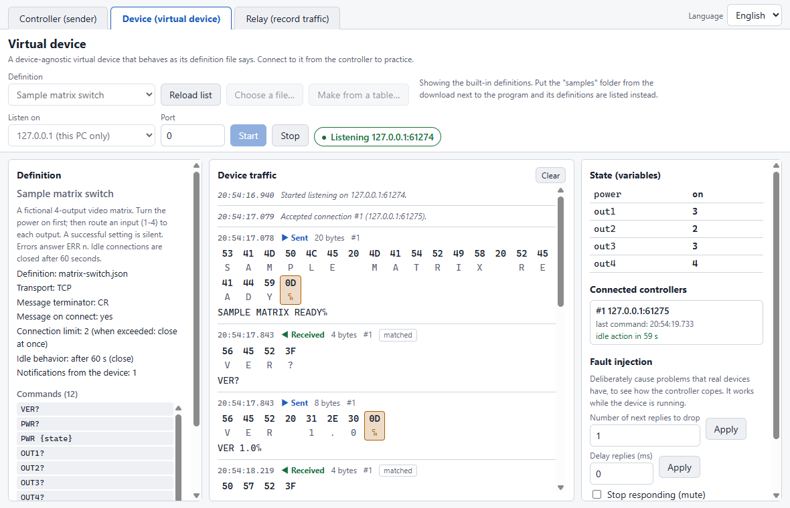
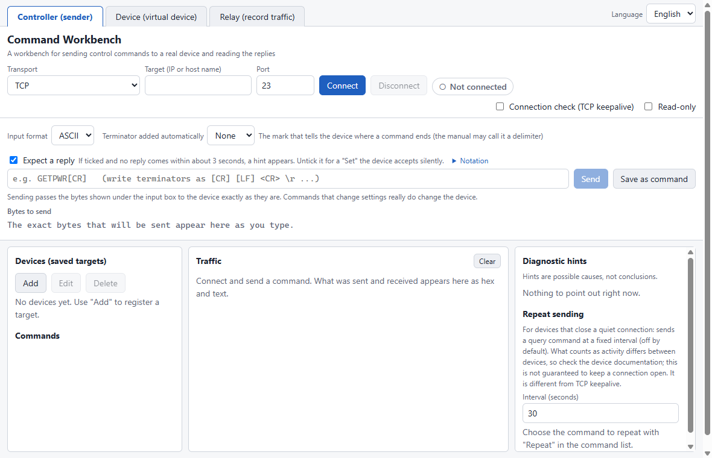
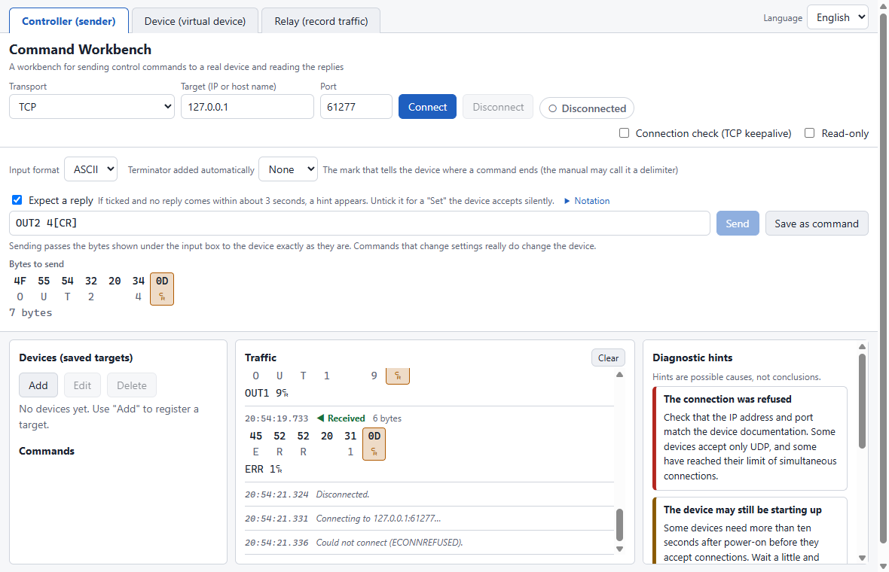
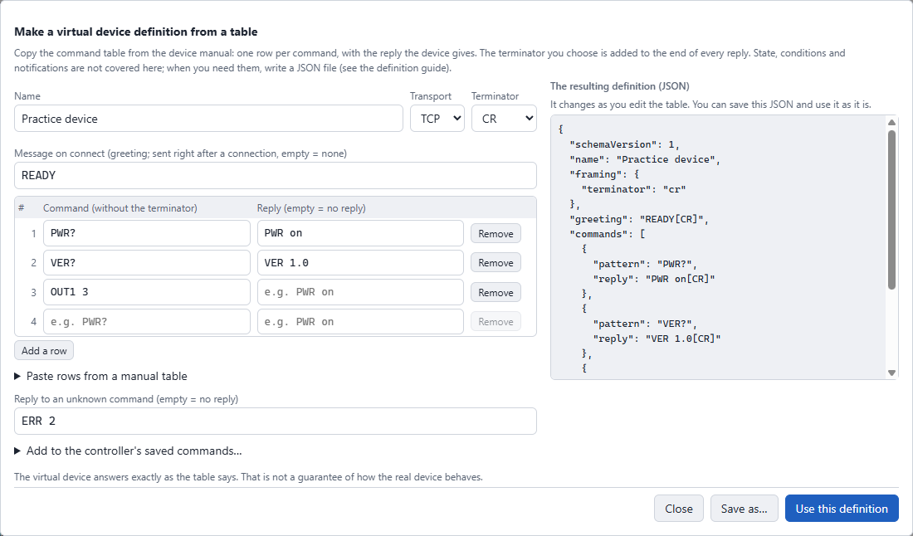
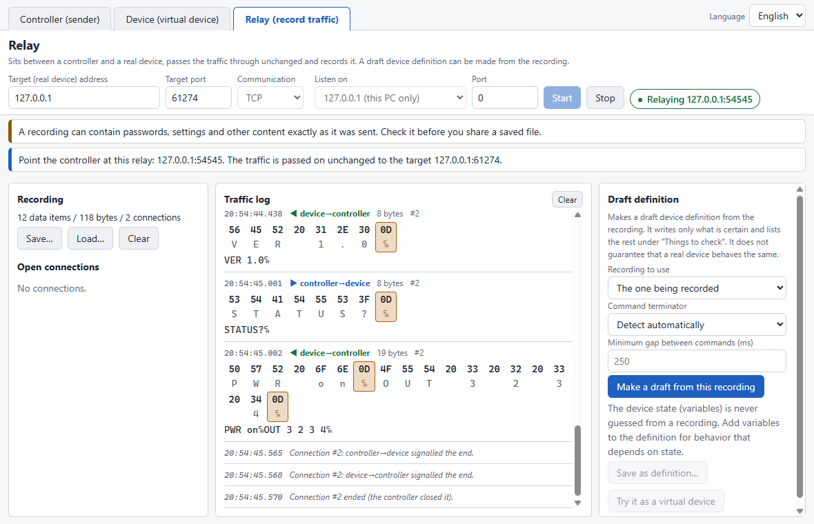
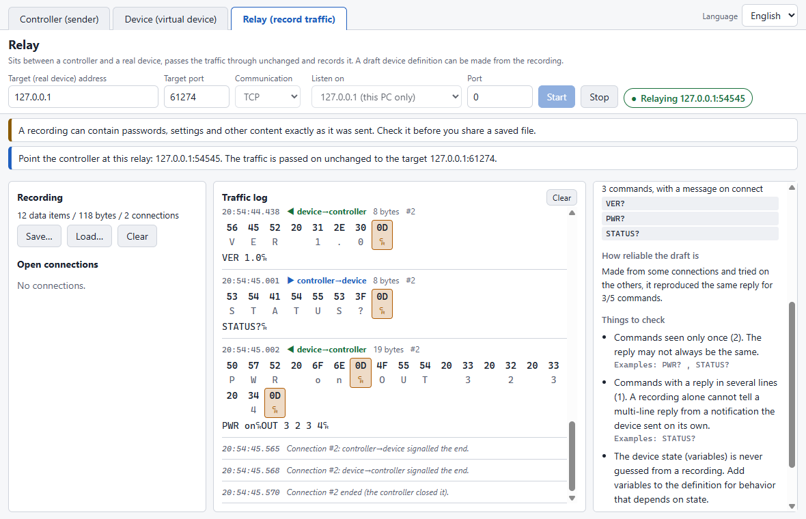
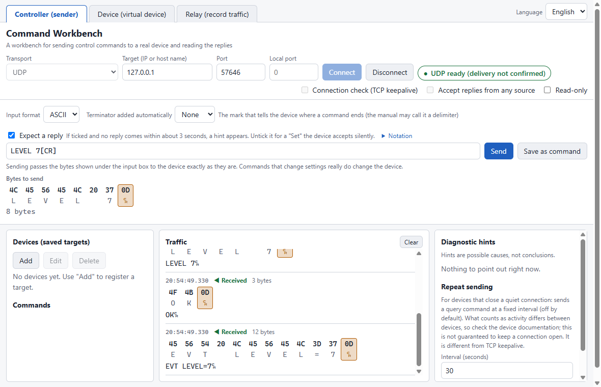

Command Workbench Manual
How to use the tool for sending control commands to a device and reading its replies.
1. Introduction
What this tool does
Many audio-visual, lighting and similar devices can be controlled over the network (LAN) by sending them text or numeric "commands". For example, sending PWR 1[CR] may switch a device on. Command Workbench is a Windows program that sends such commands to a device and lets you read what the device sends back.
Device manuals describe commands in their own notation ([CR], <CR><LF>, 0x0D, and so on). Turning that notation into the bytes that are really sent, and finding out why a device does not answer, are the two places where newcomers most often get stuck. This tool helps with both:
- You type a command the way the manual writes it, and see the exact bytes before anything is sent.
- What is sent and received is shown side by side in hexadecimal and as text. The characters that mean a line ending (CR and LF) are marked with colour and a symbol.
- When there is no reply, or something else goes wrong, it suggests what to check next.
The three roles (tabs)
There are three tabs at the top. Each is a separate role, and they can all be used at the same time in one program.
| Tab | What it does | When to use it |
|---|---|---|
| Controller (sender) | Sends commands to a device and reads the replies. | Operating or investigating a real device. |
| Device (virtual device) | Pretends to be a device and answers as a "definition file" says. | Practising without a real device. Checking how the controlling side behaves. |
| Relay (record traffic) | Sits between a controller and a real device, passes everything through unchanged, and records it. | Seeing what another program and a device say to each other. Making a draft of a virtual device from a recording. |
What it cannot do
- It does not reproduce any particular manufacturer's or model's device. A virtual device does only what its definition says. It is not a guarantee of how a real device behaves.
- Devices that need a login or a challenge-response handshake are not supported yet.
- The supported transports are TCP and UDP. Serial (RS-232C) and USB are not supported.
- Broadcast and multicast (one send that reaches many devices) and IPv6 are not supported.
Starting the program
Extract the downloaded ZIP to a folder you can write to (the desktop or Documents, for example) and run Command Workbench-0.2.0-portable.exe. There is no installer.
- The first start can take a few seconds.
- The program is not code-signed, so Windows or your antivirus software may show a warning. Check where you downloaded it from, then decide whether to run it.
- The files the program saves are created in the same folder as the program. To remove everything, delete that folder.
2. The first five minutes
Try everything once without a real device, inside your own computer. You will set up a virtual device (the Device tab) and connect to it from the Controller tab. Nothing leaves your computer. There is no device to break.
-
Prepare a virtual device on the Device tab. Open the "Device (virtual device)" tab and choose Sample matrix switch from the Definition list (it loads as soon as you choose it). Leave Listen on at 127.0.0.1 (this PC only) and the port at
0.
The definition is chosen. On the left is the list of commands this virtual device understands (VER?, PWR? and so on). -
Press Start. The badge at the top right reads Listening 127.0.0.1:number. Remember this port number; it changes every time you start.
-
Connect to it from the Controller tab. Open the "Controller (sender)" tab, enter
127.0.0.1as the Target and the port number you noted as the Port, and press Connect. The badge turns to Connected, and the device's message on connectSAMPLE MATRIX READYappears in Traffic. -
Send a command. Type
VER?[CR]in the input box. Under it, Bytes to send shows what will really be sent (56 45 52 3F 0D). Check that[CR]became0D(a control character that acts as a line ending), then press Send (or Enter).
As you type, "Bytes to send" shows the result before anything is sent. [CR]has become0D. -
Now send these in order. After each one, look at the reply (or at the fact that there is none).
Send What happens PWR?[CR]The reply is PWR standby.OUT1 3[CR]The power is not on, so the reply is ERR 10(not accepted right now).PWR 1[CR]Switches the power on. Nothing is replied when it succeeds; that is a quirk of this virtual device (real devices often do the same). Instead the device announces EVT PWR onby itself (a notification).OUT1 3[CR]This time it succeeds, again silently. Check with OUT1?[CR]; the reply isOUT1 3.OUT1 9[CR]Out of range (only 1 to 4 are valid), so the reply is ERR 1.
The Traffic panel. Blue is sent, green is received. The symbol at the end of a reply stands for CR. -
Look at the device side too. Back on the Device tab you see the commands it accepted, what it replied, and its state (in the State (variables) table,
powerisonandout1is3).
The Device tab. The right column holds the device's state and the controls that cause problems on purpose (Fault injection). -
Break it on purpose. Under Fault injection tick Stop responding (mute), then send
PWR?[CR]again from the Controller tab. No reply comes. If Expect a reply is ticked, after about three seconds Diagnostic hints on the right shows "No reply" and what to check. This is what it looks like when a real device goes quiet. Untick the box when you have seen it.
That is the basic flow: type, check the bytes, send, read the reply. To use a real device, change only the target in step 3 to the device's IP address and port. But on a real device, a command that changes a setting really changes it; read "11. Using it safely" first.
3. Reading the screen
Tabs and language
The tabs at the top switch between Controller, Device and Relay. Language at the top right switches between 日本語 and English. Changing it does not affect connections or anything that is running.
The Controller screen

- The connection bar (top). Enter the transport (TCP / UDP), the target and the port, then press Connect or Disconnect. The badge on the right shows the current state with both colour and a symbol. The Read-only box is a safety switch for real devices (chapter 11).
- The command input (below it). The input format, the terminator added automatically, the input box, Send and Save as command. Bytes to send under the box is what will really be sent.
- The left column. Devices (saved targets) and the Commands saved for each device.
- The middle panel, Traffic. What you sent (blue) and what you received (green), with times. The upper row is hexadecimal and the lower row is text; control characters such as CR and LF are shown in coloured boxes.
- The right column, Diagnostic hints. Things to check when something is not working. Repeat sending settings are below it.
State symbols
State is shown by symbol and text as well as colour (for example ○ idle, ● running, another symbol for an error), so it can be read even if colours are hard to tell apart.
4. Writing commands
You can type a command the way the device manual writes it. What it turns into is always shown under the input box.
| You type | Bytes sent |
|---|---|
[CR] <CR> \r | 0D |
[LF] <LF> \n | 0A |
[CRLF] <CR><LF> | 0D 0A |
[NUL] [STX] [ETX] [ACK] [NAK] [ESC] [SP] [TAB] and so on | The control character of that name (upper or lower case) |
0x0D \x0D | One byte in hexadecimal (exactly two digits) |
\\ \[ \< | The character itself (\ [ <) |
| anything else | Sent as text (UTF-8) |
Input format
- ASCII (default): the notation in the table works. Characters outside ASCII, such as Japanese, are sent as UTF-8 bytes. For a device that expects Shift_JIS or another encoding, give the bytes directly in HEX.
- HEX: type raw bytes, such as
47 45 54 50 57 52 0D.
When you write several hexadecimal values in a row, separate them with spaces, as in 0x0D 0x0A. 0x0D0x0A is deliberately an error, to prevent misreading.
Terminators (the mark that ends a command)
Many devices use CR or LF as a mark meaning "the command ends here". This is called a terminator. Without it, a device keeps waiting for the rest and may never reply.
- Write
[CR]in the input box yourself, or choose CR, LF or CR+LF under Terminator added automatically. - If your input already ends with a terminator and you also chose an automatic one, the terminator would be sent twice, so a warning appears.
- If the notation cannot be read, the program does not guess; it shows where and why.
5. Controller
The Controller sends commands to a device and reads the replies. It works with a real device and with a virtual one (the Device tab).
Saving a device
Press Add under Devices on the left, enter a name, the target (IP address or host name), the port and the transport, and save. After that, choosing the device from the list fills in the connection fields. Use Edit and Delete to change it later. Find the IP address and port in the device's manual or its settings screen.
Sending
- Press Connect.
- Type a command and check Bytes to send.
- Press Send (or Enter). It is sent immediately. There is no confirmation screen, so make a habit of checking the bytes before you press it.
When Expect a reply is ticked and no reply comes within about three seconds, a hint appears. Untick it when you send to a device that stays silent on success.
Saving commands for reuse
Press Save as command, give it a name and choose a kind. Saved commands appear under Commands on the left and can be sent with one press of Send. Commands are saved per device.
- Query: a read that does not change the device's state (for example
PWR?). - Set: a command that may change the device's state (for example
PWR 1). If unsure, choose Set.
The kind is used by the safety features (read-only mode, chapter 11). They are saved in workbench-commands.json in the same folder as the program.
Repeat sending (keeping a connection alive)
Some devices close the connection when no command arrives for a while. Repeat sending helps prevent that by sending only a query command at a fixed interval. Press Repeat on a saved command, set the interval (seconds) in the right column and press Start. It cannot be started while Read-only is on, and it stops when the connection ends.
Separately, there is a Connection check (TCP keepalive) box. That is the operating system checking that the other side has not disappeared; a device does not necessarily count it as activity.
Diagnostic hints
When you cannot connect, get no reply, or are disconnected, Diagnostic hints on the right shows "what to check next". A hint is a possible cause, not a conclusion.

6. Device
This runs a virtual device that answers as a definition file says, instead of a real device. Use it to:
- practise sending commands and reading replies without a real device;
- see how the controlling side copes with quirks real devices have (silence on success, errors that depend on state, a connection dropped after a while, and so on);
- check a control program you wrote yourself.
How to use it
- Choose from the Definition list. The bundled samples are listed. Choose a file… loads a definition from anywhere else.
- Choose Listen on and the Port, then press Start. Port
0means "pick a free number automatically". Enter a number if you need a fixed one. - From the connecting side (the Controller tab or another program), connect to the displayed
address:port.
What is on the screen
- Left: the definition. The loaded definition's name, description, settings (connection limit, idle disconnect and so on) and the list of commands it understands. The samples' descriptions are in English.
- Middle: Device traffic. The commands it received and what it sent back, each marked with how it was handled (for example matched).
- Right: state and controls. A table of the device's state (variables), the list of connected peers and Fault injection.
Fault injection
While the device is running you can cause, on purpose, problems that real devices have. It is for practising how the controlling side copes.
- Number of next replies to drop makes that many replies disappear.
- Delay replies (ms) adds the given delay to every reply.
- Stop responding (mute) keeps accepting commands but replies to none.
- Close all connections now disconnects from the device side.
Real-device quirks
A definition can reproduce real-device quirks: a limit on simultaneous connections, closing a connection when no command arrives for a while (TCP keepalive does not prevent it), going silent, no answer just after start-up, and ignoring commands that come too fast. Which ones apply is written in the definition file (chapter 9).
Take care when listening on the whole network
If you set Listen on to 0.0.0.0 (the whole network), other devices on the same network can connect too. A confirmation appears, and a warning stays visible while it runs. Use it only on a network you trust, and leave it at 127.0.0.1 (this PC only) unless you need otherwise. The first time, the Windows firewall may ask for permission.
Making a definition from a table
You do not have to write JSON for a first definition. Press Make from a table… next to the Definition list. A window opens with a table like the command table in a device manual: one row per command, with the Command the device receives and the Reply it gives. Leave the reply empty for a command the device accepts silently.

- Choose the Terminator once. It is added to the end of every reply, so do not write
[CR]at the end of a cell (that is shown as a mistake). - Message on connect is sent right after a connection and is optional. Reply to an unknown command is sent when nothing in the table matches; empty means no reply.
- Paste rows from a manual table takes lines copied from a spreadsheet or a manual: the command and the reply separated by a tab, one command per line.
- A mistake (for example the same command twice) is shown with its row number, and the buttons stay disabled until it is fixed.
- A table covers fixed replies only. A device whose state changes, or one that needs conditions, notifications or connection quirks, needs a JSON definition (see 9. Writing a definition).
Your own definitions
Put a definition file (.json) in the samples folder next to the program and press Reload list; it appears in the list. Opening a sample also shows how to write one. If there is no samples folder, the samples built into the program are used (and the screen says so).
7. Relay
The Relay sits between a controller (or another control program) and a real device, passes the traffic through unchanged, and records all of it.
Use it when you want to:
- see what a manufacturer's own program and a device actually say to each other (to find behaviour the manual does not describe);
- make a draft definition of a virtual device from a recording, so you can practise later without the real device.
How it works
Normally you connect "control program → device". With the Relay it becomes "control program → Relay → device", and the Relay hands the bytes of both directions on in the same order and unchanged. To use it, you only change what the control program connects to, from the device to the Relay.
How to use it
- Open the "Relay (record traffic)" tab.
- Enter the real device in Target (real device) address and Target port. Only a device on your own network (a private address) or this PC is accepted.
- Choose Listen on and the Port, then press Start. A message tells you to point the controller at the Relay's address and port.
- Change what your controller (or other control program) connects to, to that address and port, and use it as usual.
- The traffic in both directions appears in the Traffic log. The Recording panel on the left shows how many items and connections were recorded.

Saving and loading a recording
Save… in the Recording panel writes the recording to a place you choose, and Load… opens one later. Clear empties the recording on screen.
A recording may contain passwords and settings exactly as they were sent. You choose where it is saved. Check the contents of a saved file before sharing it with anyone. The program never saves or sends a recording by itself.
Making a draft definition from a recording
Press Make a draft from this recording on the right to get a draft definition of a virtual device, based on the recording.

- The draft contains only what the recording makes certain. Whatever could not be decided is left out and listed under "Things to check", with the reason.
- Try it as a virtual device loads it into the Device tab (stop a running virtual device first). Save as definition… writes an editable JSON file.
- A device's "state" (is it powered on, for example) is never guessed from a recording. A command whose reply depends on state does not go into the draft; add the variables yourself.
A draft is a starting point. It is not a guarantee that it behaves like the real device. For how drafts are made and what each "Things to check" item means, see Recording traffic with the Relay, and drafting a definition.
What the Relay promises, and what it does not
- Promised: the bytes in each direction arrive in the same order and unchanged.
- Not promised: where TCP splits or joins the data, and exact timing. A recording shows what the Relay saw, which can differ from what the two ends saw. The Relay opens its own connection to the device, so settings such as TCP keepalive are not carried over.
8. Using UDP
All three tabs handle UDP as well as TCP. First, the differences:
| TCP | UDP | |
|---|---|---|
| Connection | Yes (it can be refused, closed or time out) | None. "Connect" only prepares sending; it cannot tell whether a device is there. |
| Message boundaries | A stream of bytes, split by terminators | One send (a datagram) is one message |
| Delivery | The OS checks and resends | No guarantee. Datagrams can be lost, duplicated or reordered |
| Where replies come from | The same connection | Some devices reply from another port, or to a fixed port |
UDP gives no feedback on delivery. When nothing comes back, the program cannot tell "lost", "wrong port", "dropped by a firewall" and "the device does not answer" apart. So the hints are a list of possible causes, not a conclusion.
UDP in the Controller
- Set Transport to UDP, enter the target and port, and press Connect. The badge reads "UDP ready (delivery not confirmed)". That is all it means.
- Type a command and press Send. One send is one datagram.

- Local port: set it when the device always sends its replies to a fixed port. Empty or
0picks one automatically. - Accept replies from any source: by default only replies from the address you sent to are accepted. Tick this if the device answers from another port.
- Broadcast and multicast targets are refused. UDP can reach only your own network (private addresses) or this PC.
UDP in the Device and the Relay
- Device: a definition with
"transport": "udp"becomes a UDP device. The bundled Sample UDP unit is an example. Several peers (sources) can talk to it at once, and the device's state is shared by all of them. - Relay: choose UDP as the transport. Each peer gets its own path, so replies go back to the right peer. A draft definition cannot yet be made from a UDP recording.
When listening on the whole network, the sender address of a UDP datagram can be forged, so the program limits how much it sends to keep others from being drawn in. Because of that limit, a large reply (over 8 KiB in the Relay) may not get through. See Using UDP for details.
9. Writing a definition
A virtual device's behaviour is written in a small JSON file, the definition. It is not a programming language. There are no expressions or scripts, only:
- Variables — the device's state (power, the selected input, and so on).
- Commands — what each input is answered with, and how it changes the state.
- Notifications — things the device says by itself (when its state changes, for example).
- Connection quirks — a connection limit, idle disconnect, silence just after start-up, and so on.
For a first definition with fixed replies only, the table window on the Device tab is easier (see 6. Device); it also shows the JSON it makes. The rest of this section is for what a table cannot do.
A minimal example (a device whose power can be queried and switched):
{
"schemaVersion": 1,
"name": "My first device",
"framing": { "terminator": "cr" },
"greeting": "HELLO[CR]",
"variables": {
"power": { "type": "enum", "values": ["standby", "on"], "initial": "standby" }
},
"commands": [
{ "pattern": "PWR ?", "reply": "PWR {var.power}[CR]" },
{
"pattern": "PWR {state}",
"capture": { "state": { "map": { "0": "standby", "1": "on" } } },
"do": { "set": { "power": "{capture.state}" } },
"reply": null,
"invalid": { "reply": "ERR 1[CR]" }
}
],
"unknown": { "reply": "ERR 2[CR]" }
}This order works well:
- Duplicate a bundled definition from the
samplesfolder (for examplematrix-switch.json) and rename it. - With the device's manual at hand, add commands and rewrite the replies.
- Save it in the
samplesfolder and press Reload list. If it breaks a rule, every problem is shown with its position when it is loaded.
The items, variable types, conditions, notifications and connection quirks are all listed in Writing a virtual device definition.
10. When something goes wrong
Find your symptom below. Also look at Diagnostic hints on the right first; it may already describe it.
Cannot connect (refused, not found, timed out)
- Check that the IP address and port match the device's manual or settings screen.
- Check that the computer and the device are on the same network (same switch, same IP address range). Check the cable and power too.
- Some devices take ten seconds or more after power-on before they can communicate.
- Some devices accept UDP only, not TCP. Try UDP as the transport.
- Some devices have reached their limit of simultaneous connections because another computer or program is still connected (some allow only one).
- When connecting to a virtual device, check that the Device tab is Listening and that the port number matches (starting with
0gives a different number each time).
It connects, but nothing comes back
- Check in Bytes to send that the terminator (such as
[CR]) is there. Devices differ in whether CR, LF or CR+LF ends a command. - Some devices reply nothing when a setting succeeds and reply only on failure. Read the state back with a query command to see whether it changed.
- Check the spelling of the command and any device ID or channel against the manual.
- The device may have gone quiet. Disconnect and connect again.
The device disconnects after a while
Some devices close the connection when no command arrives for a while. Check the manual for what counts as activity (TCP keepalive may not count). Sending a query command with Repeat sending can prevent it.
"Send" is disabled or blocked
With Read-only ticked, only saved "query" commands can be sent. Set commands and raw input are blocked. This is meant to protect a real device. Unticking it asks for confirmation.
I cannot save a command as a "query"
A command longer than 256 bytes cannot be saved as a query, because the confirmation screen could not show all of it. Save it as a "set" command.
No reply over UDP
- Check the port, the cable and the firewall. UDP gives no error when data does not arrive.
- If the manual says the device replies to a fixed port, enter that number as the Local port.
- If the device answers from a port other than the one you sent to, tick Accept replies from any source.
- A command over about 1472 bytes may be dropped by the network. Shorten it.
- If it says the local port cannot be used, another program is using that port. Choose another number or leave it empty.
Slow start, or a warning at start-up
A single-file program unpacks itself on every start, so the first start can take a few seconds. Because the program is not code-signed, Windows or your antivirus software may show a warning.
Saving fails, or the saved file is said to be broken
Commands are saved in workbench-commands.json in the same folder as the program. If the program is in a folder you cannot write to (a read-only place, for example), saving fails; move it to a folder you can write to. If the file cannot be read (damaged, a newer format, too large), the program does not overwrite it. Rename the file to keep a copy, then restart the program.
A firewall prompt appeared
When the Device or the Relay listens on 0.0.0.0 (the whole network), Windows may ask for permission. If you are only experimenting on this PC, choose 127.0.0.1 (this PC only); the prompt normally does not appear.
11. Using it safely
On a real device, a command that changes a setting really changes it. Switching power, changing a video route or changing a volume affects the site at once. Always check Bytes to send before you press Send.
There is no confirmation on send
Pressing Send is the confirmation. Set commands and typed input are sent as soon as you press it, just like queries. Check the bytes shown under the input box first.
Keep queries and sets apart
- When you save a command, mark as a query only what does not change the state. If unsure, mark it set.
- When you save something as a "query", the program's own dialog lists the exact bytes. Check them, then approve. Changing the contents of a saved query asks again.
Read-only mode
When you connect a real device just to look, tick Read-only. Then only saved queries can be sent; set commands and typed input are blocked. Unticking it also asks for confirmation.
Listening on the whole network
- The Device and the Relay listen on this PC only (127.0.0.1) by default.
- If you choose 0.0.0.0 (the whole network), other devices on the network can connect without any authentication. A confirmation appears and a warning stays visible. Use it only on a network you trust.
- The sender address of UDP can be forged, so listening on the whole network could be used to send replies to a third party. The program limits how much it sends to reduce the effect, but cannot remove it.
Where it can send
- The TCP Controller connects to whatever address you type, because it cannot know where your device is on the network. Make sure the address you type is correct.
- The UDP Controller and the Relay reach only your own network (private addresses) or this PC.
Handling recordings
A Relay recording may contain passwords. You choose where it is saved; check the contents before sharing it. The program sends a recording nowhere.
Text on screen is not trusted
Text received from a device and the contents of a definition file you load are only displayed; they never drive what the program does. The confirmation dialogs described above are shown by the program itself, not by the screen content. If you find a security problem, report it as described in SECURITY.md (linked from the README).
12. Glossary
- IP address
- The address of a device on a network, written as four numbers separated by dots, such as
10.0.0.5. It is in the device's manual or settings screen. - Port (port number)
- The number of a "door" on a device (1 to 65535). The same IP address with a different port is a different peer.
- 127.0.0.1
- A special address meaning "this PC itself" (loopback). It never reaches the network. Use it for practice and checks.
- Private address
- An address used only inside a home or company network (
10.…,172.16.…to172.31.…,192.168.…and so on). It is not used on the internet. - TCP
- A way of exchanging data after first making a "connection". It checks that data arrived and resends what is missing. Most device control uses it.
- UDP
- A way of sending separate chunks of data (datagrams) without making a connection. Delivery is not guaranteed.
- Datagram
- The chunk of data sent in one UDP send. In this tool, one datagram is one command or one reply.
- Terminator
- The character that marks the end of a command: CR, LF or both (CR+LF). Each device has its own.
- CR / LF
- Control characters meaning a line ending. CR (carriage return) is
0Din hexadecimal and LF (line feed) is0A. The screen shows them as coloured symbols. - Hexadecimal (HEX)
- A way of writing numbers with 0–9 and A–F. One byte is two digits (
00toFF). It is used to look at what is sent and received. - Byte
- The smallest unit of data in communication. One letter or digit is one byte.
- Query / Set
- The kinds of command in this tool. A query reads without changing the device's state; a set command may change it.
- Definition file
- A small JSON file that describes how a virtual device behaves. How to write one is in a separate guide.
- TCP keepalive
- A mechanism by which the OS periodically checks that the other side has not disappeared. A device does not necessarily count it as activity.
- Firewall
- Something that allows or blocks communication. Windows has one built in. It may ask for permission when a program starts listening.
- Relay (proxy)
- Something that sits between two parties and passes their traffic on. The Relay in this tool records the traffic while it does so.